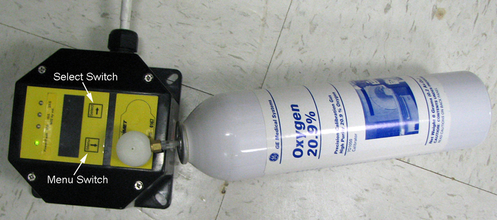

Illustration 8: Calibration Function

| Power/Fault LED Code | Indication Sequence |
| Exit | Green-red, Green-red, Green-red... |
| Span | Green-red-red-red, Green-red-red-red, Green-red-red-red... |
| Cal Successful | Green for 3 seconds |
| Cal Failed | Red for 3 seconds |